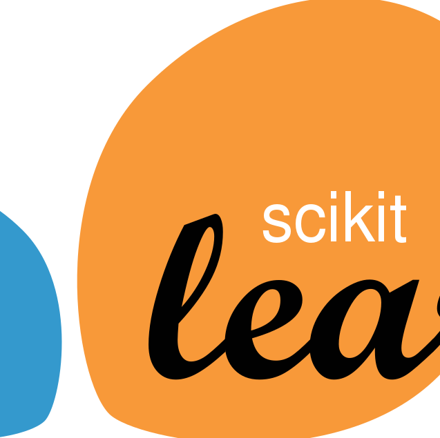

Methods
Timeline of development for the two GPT-3 powered models.
-

Model Selection
Choosing the Right GPT-3 Submodel
GPT-3 has 4 powerful models under its hood, but
davinciwas our selection due to its higher capacity for understanding specific instruction. Furthermore, its training data ends in October 2021, nearly 2 years after every other model choice. -
Initial Prompting
Starting the Process
Initially, both prompts started with very simplistic formats. No in-context learning was used, and fairly simplistic definitions of terms like 'relevance', 'positive', 'neutral', and 'negative' were used. Because each Tweet required its own API call to the OpenAI GPT-3 API, the prompts were run on samples of 100 Tweets at a time rather than the whole dataset.
-
Prompt Engineering
Improving Classification
In order to improve the results from the model, further prompt tuning was required. Both prompts pursued 'few-shot' learning, where the prompt itself provides example inputs, outputs, and reasonings. These included randomly selected Tweets as well as 'pain-point' examples that highlighted where the model consistently struggled.
-

Comparing to Quarter 1 Results
Evaluate Applicability of GPT-3 Models
To assess if GPT-3 improved classification performance from the team's results in quarter 1, we compared the GPT-3's performance in classifying Tweet relevance with the Naive Bayes Classifer from quarter 1 and compared the GPT-3's performance in evalutaing sentiment with a Random Forest Classifer.
-
Evaluate and Wrapping Up
Into the Future
After running through prompt engineering, sampling, and evaluating several times, the last step of the project was to communicate our findings and results with our mentors from the China Data Lab, and deciding what role GPT-3 can have in the future of the 'Congress Tweets' project.


{kind=link}